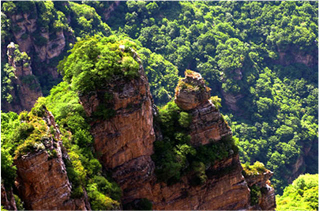
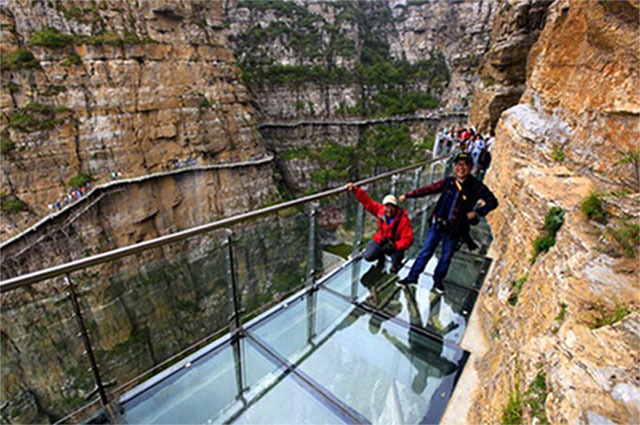

河北省涞源白石山 京郊避暑旅游新选择
日期：2016年07月13日盛夏又至，纳凉避暑的旅游目的地备受青睐。这个夏天，不如就去河北涞源白石山吧，这里不仅有“步步惊心”的玻璃栈道，更是躲避炎热、回归自然的“透心凉”之地。
涞源有“凉城”之美誉，而素有“小黄山”之称的白石山景区，位于涞源县城南15公里，雄居八百里太行山最北端，最高峰云都峰海拔2096米，拥有全国独一无二的大理岩峰林地貌。白色的大理石山体与葱茏茂密的植被相互映衬，漫步其间，移步换景，享受着一个远离都市喧嚣和烦恼的世外桃源。（第一旅游网 图/ 迟小鱼 程诗然）
[ 21.7℃ 寻一片清凉世界 ]
据悉，涞源县夏季气候凉爽，暑期平均气温只有21.7℃。即使最热的七八月份，当地居民家中、宾馆中基本上无需使用空调、电扇。炎热的夏天，你可以在白石山的树荫里散步，或者去玻璃栈道上放声尖叫，更可以到十瀑峡听瀑布飞溅正是由于茂盛的森林和较高的海拔，白石山成为京郊避暑的首选之地。
[ 1900米 体验一回“生死惊魂” ]
2014年9月，白石山玻璃栈道对外开放，是国内最长最宽、海拔最高的悬空玻璃栈道。该栈道海拔1900米，长95米、宽2米，位于白石画廊的双雄石至飞云口绝壁栈道1.5公里处。走在玻璃栈道上不仅能感受步步惊心，如腾云驾雾般的行走在绝壁悬崖，更能完美的欣赏到白石山“雄秀双并融，一山兼四季”的神奇美景。白石山玻璃栈道为混凝土框架结构，3.2厘米厚的双层夹胶玻璃与不锈钢龙骨架巧妙结合，每平方米承重达1000公斤，为游客游览风光带来别样体验的同时保障安全。
[ 白石山 联游推荐 ]
1. 瀑布白石山降水较多，植被茂密，涵养水份较多，泉眼多出现于海拔1300米的高度范围内，西麓和南麓的峡谷瀑布各具特色，以西麓十瀑布峡的双龙瀑最为别致壮观。十瀑峡中溪水流淌4000米，穿行于山石之间，十瀑连叠不断，瀑上有潭，潭泄成瀑，瀑布水花飞溅。飞龙瀑落差48米，瀑面宽3米，如银河倒挂，声宏如雷，气势雄伟双龙瀑分两级跌下，落差60米，落差大。干旱时，水流细，显的非常秀气;丰水期，银帘高悬，景色诱人。连叠不断的瀑布溪水，在绿色苍郁的植被衬托下，更显出生机勃勃，使游人流连忘返。
2. 长城长城从白石山北侧逶通过，长约4000米，大部分敌楼和墙体保存完好，是全国长城中保存比较完好的地段之一。“敌楼修在城墙外”是白石山长城的一“怪”，它反映了长城建筑因地制宜的原则。
白石口长城相对其他长城，敌楼密集，最近的相距也就百米左右，大部分敌楼保存还算完好。行走在长城，通透的蓝天上挂着各种形态的白云，山石之间的绿色依然不减，一路经常看到奇异怪石，这些都为古老长城增色不少。
[ 温馨小贴士 ]
1. 门票150元/人；东门祥云门索道：50元/人；1600米飞云口索道：45元/人；西门碧溪索道：65元/人。
自驾：北京到白石山全程高速200公里左右，从北京上京石高速(G4)—廊涿高速—张石高速—从涞源/白石山出口出。
参加者均视为具有完全民事行为能力人，能自行承担产生的后果负完全责任；本俱乐部活动属结伴同游性质，自愿参加；参加者已认识到户外活动的风险，自助活动风险自负，一切意外与俱乐部及领队无关，发起者和领队均不承担任何相应法律责任及经济赔偿责任，参加者放弃对同行的组织者、领队和队友的索赔权。
2.大巴北京有大巴直达涞源，在永定门乘坐高速大巴直达。
发车时间：北京：7:00、9:00、11:00、13:30、15:00、17:00；涞源：6:30、8:30、10:30、13:30、15:00、16:30
3.火车a) 6437次：北京西-涞源，17:45 - 23:22，全程5小时37分；b) K603次：北京-涞源，17:17 - 20:52，全程3小时35分
更多活动
 “蜗皇宫” 女蜗炼石补天处
“蜗皇宫” 女蜗炼石补天处
发布时间：2016/05/27

“女娲氏，开世造物，称为大地之母。”女娲造人、女娲补天的神话故事家户喻晓 ...
 追云白石山：跌进一个奇幻梦境
追云白石山：跌进一个奇幻梦境
发布时间：2016/05/27

天气晴朗的时候，白石山的云如顽皮的孩童，在蓝天中捉迷藏，忽聚忽散，变幻各异 ...
 侗寨全国摄影大展
侗寨全国摄影大展
发布时间：2016/05/27

位于湖南西南部的通道侗族自治县“坐湘西倚桂北而拥黔南，恃雄峻纳 ...
 白石山探险之旅
白石山探险之旅
 涞源白石山景区冬季游
涞源白石山景区冬季游
 万佛山侗寨国庆活动
万佛山侗寨国庆活动
 蔚县剪纸体验活动
蔚县剪纸体验活动
 玻璃栈道挑战赛
玻璃栈道挑战赛
 第七届蔚县杏花节盛大开幕
第七届蔚县杏花节盛大开幕
我们的项目
 河北涞源白石山风景区
河北涞源白石山风景区
河北武安东太行风景区
河北承德兴隆山风景区
河北蔚县暖泉古镇
湖南通道万佛山·侗寨风景区
河北邯郸涉县娲皇宫景区
联系我们
中景信旅游投资开发有限公司
China Top View Tourism Investment Development (Group) Co.，Ltd.
北京市朝阳区融科望京中心A座12层
电话：010-57360182
Copyright © 2016 Chinatopcredit Inc. All rights reserved. 中景信旅游投资开发有限公司 京ICP备14018099号-1号